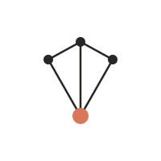

The mark: an interconnected audience that resolves into a single Read. Primary “The Resolve”; alternate “The Signal”. Cream on charcoal; terracotta marks the Read, once.

dark
light
dark
favicon · 26px